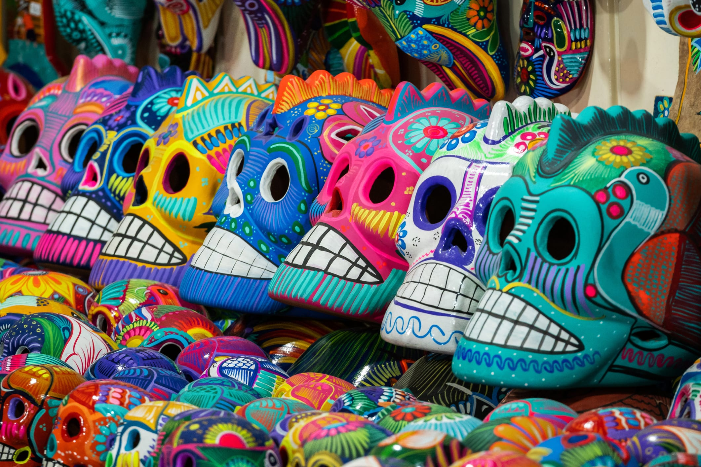

Culture
Whats makes the people here special.

Mexico has a rich and diverse culture and history. The culture of Mexico is some of the richest in the world from the ruins, the people to even the food. First inhabited more than 10,000 years ago, the cultures that developed in Mexico became one of the cradles of civilization. During the 300-year rule by the Spanish,
During the 300-year rule by the Spanish, Mexico was a crossroads for the people and cultures of Europe, America, West Africa, and with minor influences from parts of Asia. Starting in the late 19th century, thegovernment of independent Mexico has actively promoted cultural fusion (mestizaje) and shared cultural traits in order to create a national identity. Despite this base layer of shared Mexican identity and wider Latin American culture, the big and varied geography of Mexico and the many different indigenous cultures create more of a cultural mosaic, comparable to the heterogeneity of countries like India or China.